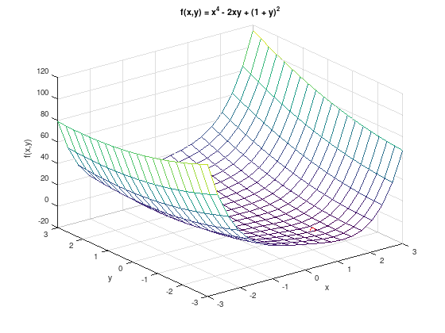

UM01¶
Consider the function \(f(x,y) = x^{4} + 2xy + (1 + y)^{2}\).
1. Create a 3D plot of \(f\) for \(-3 \leq x,y \leq 3\).
f = @(x,y) x.^4 + 2.*x.*y + (1 + y).^2;
[x, y] = meshgrid (linspace (-3, 3, 20));
mesh (x, y, f(x,y));
grid on;
xlabel ('x');
ylabel ('y');
zlabel ('f(x,y)');
title ('f(x,y) = x^4 + 2xy + (1 + y)^2');
hold on;
plot3 (1, -2, -2, 'ro');

2. Compute the gradient \(\nabla f\) and the Hessian matrix \(\nabla^{2} f\).
Solution:
3. Compute all real stationary points and the respective function values.
Solution:
Stationary points: \(\nabla f = 0\).
From the second equation follows \(y = -(x + 1)\). The resulting equation
yields the real stationary point \(P_{1} = (1,-2)^{T}\) with \(f(P_{1}) = -2\).
Use polynomial long division to find more potential real roots:
Finally the equation
has only complex roots.
Thus \(P_{1}\) is the only real stationary point.
4. Classify all stationary points.
Solution:
Hessian matrix at \(P_{1}\):
Classification with eigenvalues (roots of the characteristic polynomial):
The roots of the characteristic polynomial are all positive. Thus the Hessian matrix is positive definite and \(P_{1}\) is a strict local minimum.
5. Numerical experiments.
Study um01_experiment in Matlab/Octave.